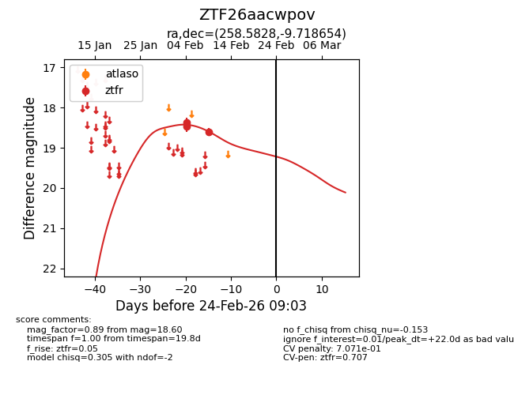
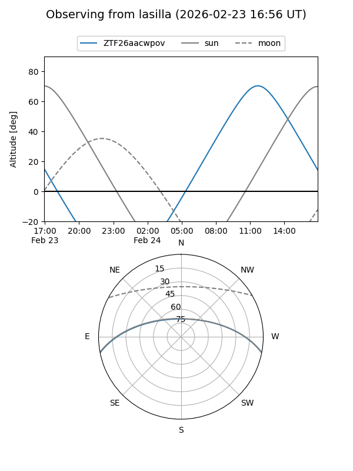
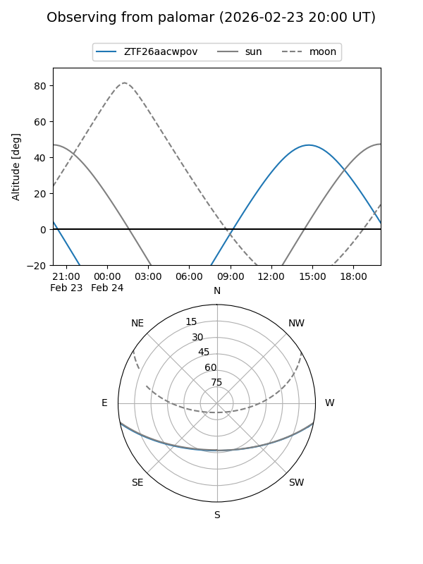
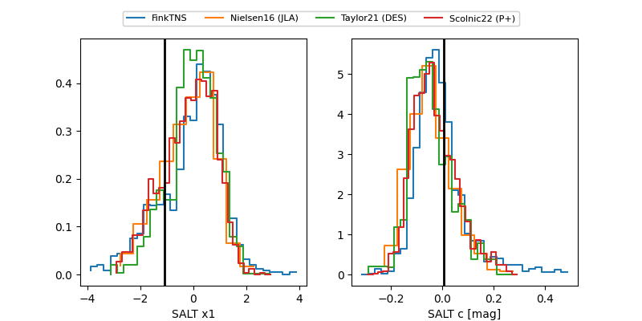

ZTF26aacwpov
Target ZTF26aacwpov at 2026-02-24 09:08
Aliases and brokers:
FINK: link
Lasair: link
ALeRCE: link
alt names
ZTF26aacwpov (ztf,fink_ztf)
Coordinates:
equatorial (ra, dec) = 258.5828,-9.71865
equatorial (HMS+DMS) = 17:14:19.88,-09:43:07.16
galactic (l, b) = (12.4827,+16.48034)
Flags:
likely cv
Photometry:
last ztfr=18.60
3 ztfr detections
Lightcurve

Visibility


Additional plots
